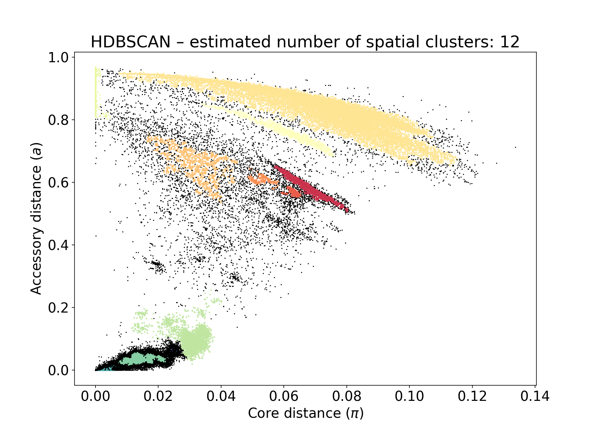

Sketching (--create-db)#
The basis of all analysis is estimation of core and accessory genome distances between samples. PopPUNK uses genome sketching to make analysis more efficient. In previous versions we used mash, however the current version now requires pp-sketchlib.
This page details options related to sketching and distance calculation, and is relevant to both Query assignment (poppunk_assign) and Fitting new models (--fit-model).
Overview#
Any input given to --r-files or --q-files will be sketched using the following
steps:
Run pp-sketchlib to sketch all input genomes.
(r-files only) Run Data quality control (--qc-db) on the sketches. Remove, ignore or stop, depending on
--qc-filter.(r-files only) Calculate random match chances and add to the database.
Save sketches in a HDF5 datbase (the .h5 file).
(r-files only) Calculate core and accessory distances between every pair of sketches, save in .npy and .pkl.
(q-files only) Calculate core and accessory distances between query and reference sketches.
Report any core distances greater than
--max-a-dist(and quit, if an r-file).
To run this before Fitting new models (--fit-model), use --create-db:
poppunk --create-db --output database --r-files rlist.txt --threads 8
As noted elsewhere, the input is file which lists your sample names and paths to their sequence data. This file has no header, is tab separated, and contains the sample name in the first column. Subsequent columns may contain paths to either assembled or raw read data (the type will automatically be inferred by checking for the presence of quality scores). Data may be gzipped or uncompressed:
MS1 ms1_assembled.fa
MS2 ms2_assembled.fa
SM14 SM14_1.fq.gz SM14_2.fq.gz
The rest of this page describes options to further control this process.
Note
Sketching considers k-mers on both the forward and reverse by default, as typically
reads and assemblies are not aligned to a single strand. For genomes where input is
always on the same (forward) strand, as may be the case with single-stranded
viral genomes, use the --strand-preserved option to ignore the reverse strand
k-mers.
Using pp-sketchlib directly#
You can use pp-sketchlib directly to create sketches, though functionality is identical
to doing this through PopPUNK. You will need to run both sketch and query modes to generate
the sketch database and the distance files as in --create-db:
sketchlib sketch -l rfiles.txt -o database -s 10000 -k 15,31,2 --cpus 4
sketchlib query dist database -o dists --cpus 4
You may want to do this if you anticipate trying different k-mer sizes, are using the databases for other purposes, or running a very large analysis where it is useful to split up the sketching and distance steps. Useful options include:
sketchlib query jaccard– will output Jaccard distances at each k-mer length, rather than core and accessory distances.--subset– to only calculate distances for a subset of the genomes in the reference database.
Warning
Some options have slightly different names. See the pp-sketchlib README for full details.
Viewing information about a database#
Use poppunk_info on a HDF5 file:
> poppunk_info --db e_coli --simple
PopPUNK database: ecoli.h5
Sketch version: 9314bda28ed25a60dd40f9b9e896c0b269500fec
Contains random matches: True
Number of samples: 10287
K-mer sizes: 15,18,21,24,27
Sketch size: 9984
Sketch size is always rounded to the nearest 64.
Warning
The sketch version should match between databases you are comparing, but the program will still run with a warning if they don’t. Check results carefully.
Without --simple to get further information for every sample (--output
to save results to a file; --network to use a non-default network file):
Sample,Length,Missing_bases,Frequency_A,Frequency_C,Frequency_G,Frequency_T,Component_label,Component_size,Node_degree
11657_5#1,4673808,2879,0.24679,0.257679,0.249401,0.24555,0,258,15
11657_5#10,4702152,4024,0.244373,0.252315,0.252617,0.249008,1,17,5
11657_5#12,5024448,5852,0.247563,0.245727,0.255955,0.24988,2,464,445
11657_5#13,5180468,5010,0.248152,0.251625,0.254893,0.244739,3,784,733
11657_5#14,5329972,13419,0.243371,0.260128,0.251946,0.244246,4,177,128
Choosing the right k-mer lengths#
To get a sensitive estimate of accessory distance independent from core distance, a small a k-mer size as possible needs to be included in the fit. However, for longer genomes too small a k-mer size will result in biased estimates of distances as small k-mers will match at random. pp-sketchlib now includes a correction for random matches, but there is still a lower limit at which this can work. A simple formula for estimating this is:
where \(k\) is the k-mer length, \(l\) is the length of the genome and \(J_r\) is the Jaccard distance expected by chance. When \(J_r\) approaches 1, estimation will begin to fail.
Note
For genomes on a single strand, the factor of two in the first formula above should be excluded.
At the other end, choosing a \(k\) which is too long will result in all k-mers mismatching. The greater the core distance \(\pi\), the lower the allowable maximum.
Some k-mer ranges for --min-k and --max-k we have found to work for various genomes:
Domain/pathogen |
Typical \(l\) |
\(\pi\) |
min-k |
max-k |
|---|---|---|---|---|
Beta-coronaviruses |
20kb |
0.1 |
6 |
15 |
Bacteria |
2-5Mb |
~0.01-0.04 |
13 |
29 |
Fungi |
16Mb |
~0.01 |
15 |
31 |
Plasmodium |
23Mb |
0.0005 |
17 |
31 |
A --k-step of four is usually sufficient, but drop this to two or three
to give the best accuracy at the expense of increased execution time.
A good model will have a straight line fit between \(\log(J)\) and \(k\). Run
with the --plot-fit option to randomly choose a number
of sample pairs to plot the relation between k-mer distances and core and
accessory fits. This plot does not have to be perfectly straight, but the general trend
should be followed. If you have a point at the end going off the scale, you will want to adjust
your k-mer range.
Choosing the sketch size#
The default sketch size \(s\) is 10000. Note that this is 10-fold greater than the mash default of 1000 – this is required to get sufficient resolution on \(\pi\). For closely related genomes with smaller \(\pi\), you may need to increase the sketch size.
As a rule of thumb, choose \(s = \frac{1}{\pi}\) based on the minimum resolution in \(\pi\) you need to observe.
Important
Any Jaccard distances \(< \frac{5}{s}\) will be ignored in the fit of core and accessory distances. This prevents spurious matches between very close sketches dominating, when a poor minimum k-mer length has been chosen.
Note that a larger sketch size will result in a linear increase in database size and distance calculation time.
Sketching from read data#
You can also use sequence reads rather than assemblies as input. The main differences are that this data is typically a lot larger, and may contain false k-mers as the result of sequencing errors.
Read data is automatically detected for each input file. It may be interleaved, or given
as forward and reverse reads. Low frequency k-mers, which are assumed to be the result
of sequencing error, will be filtered out automatically. Use the --min-kmer-count option
to set the minimum number of k-mers needed to be observed to include these. Most error
k-mers will appear only once, but ideally set this somewhere between 1 and the coverage:
In this example the coverage is around 150x, so most correct k-mers have a frequency centred around this point (there is a second peak at twice this value, which are repeats). There is a large peak at a frequency of one, which are the error k-mers. In this example any filter between 15-75 would be appropriate.
The default filter is a probabilistic countmin filter, assuming up to 134M unique k-mers. If you expect
significantly more k-mers than this, for example with longer genomes, you should add
the --exact-count argument to use a hash table instead. This is exact, but may
use more memory.
Sketching RNA viruses#
Firstly, if your viral genomes are single stranded, you probably need to add the
--strand-preserved option.
For small genomes where strong selection is present, in the example here shown with influenza genomes, the third codon bias may be so great that 6-mers (or any multiple of three) have fewer matches than 7-mers. In a mostly coding genome the third codon position across a gene is more free to mutate, as it can cause non-synonymous changes, whereas the first and second codons always cause coding changes. This can cause issues with the core-accessory regression pushing some core distances to 0:
A solution to this is to use k-mers with spaced seeds, where only every third base is added to the k-mer. This prevents multiples of the codon size lining up with heavily mutated bases.
k-mer |
dense |
Phased seed |
|---|---|---|
3 |
XXX |
X–X–X |
4 |
XXXX |
X–X–X–X |
5 |
XXXXX |
X–X–X–X–X |
Add the --codon-phased option to enable this. This fixes the above example:
Note
When using a database constructed with codon phased seeds for Query assignment (poppunk_assign), codon phased seeds will automatically be turned on for the query sequences too.
GPU acceleration#
There are two pieces of heavy computation that can be accelerated with the use of a CUDA-enabled GPU:
Sketching read data
--gpu-sketch.Calculating core and accessory distances
--gpu-dist.
We assume you have a GPU of at least compute capability v7.0 (Tesla) with drivers correctly installed. You do not need the CUDA toolkit installed, as all libraries are included with the pp-sketchlib executable.
Note
You will see ‘GPU’ in the progress message if a GPU is successfully being used. If you see the usual CPU version your install may not have been compiled with CUDA.
Sketching read data with the GPU is a hybrid algorithm which can take advantage of
CPU threads too (which are used to read and process the fastq files). You can add
up to around 16 --threads to keep a typical consumer GPU busy. The sequence data
must fit in device memory, along with a 2Gb countmin filter. The countmin filter
is 134M entries wide. If you expect your reads to have more unique k-mers than this
you may see an increased error rate.
Typical output will look like this:
Sketching 128 read sets on GPU device 0
also using 16 CPU cores
Sketching batch: 1 of 9
k = 29 (100%)
k = 29 (100%)
k = 29 (100%)
k = 29 (100%)
k = 29 (100%)
k = 29 (100%)
k = 29 (100%)
k = 29 (100%)
k = 29 (100%)
k = 29 (100%)
k = 29 (100%)
k = 29 (100%)
k = 29 (100%)
k = 29 (100%)
k = 29 (100%)
k = 29 (100%)
Sketching batch: 2 of 9
k = 29 (100%)
k = 29 (100%)
k = 29 (100%)
k = 29 (100%)
....
Calculating distances with the GPU will give slightly different results to CPU distances, but typically within 1%, which should not usually affect downstream results. The sketches, random matches and distances must fit in the device memory. Around 35k bacterial genomes uses around 10Gb of device memory, typical for a high-end consumer device. If the device memory is exceeded the calculation will automatically be split into chunks, at only slightly reduced efficiency. The amount of memory available and needed will be estimated at the start:
Calculating distances on GPU device 0
Estimated device memory required: 565Mb
Total device memory: 11019Mb
Free device memory: 10855Mb
Progress (GPU): 100.0%
Important
The GPU which is device 0 will be used by default. If you wish to target another
GPU, use the --deviceid option. This may be important on computing clusters
where you must use your job’s allocated GPU.